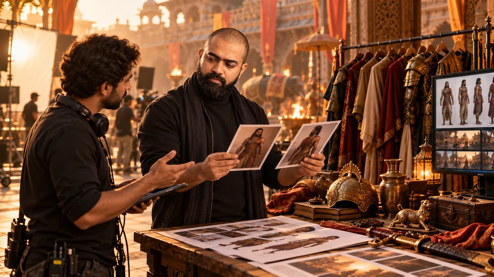

Character sheet
Face and costume references have separate roles; views, expressions and details agree with the supplied images.
Review character and prop references, record open decisions, and hand approved assets to the team.
RETURN TO SESSION GUIDEClass: 7 November 2026, 8:00–10:00 PM IST · Transcript says two weeks for the project; no exact date is supplied.

Record your team's links and review notes in the official Homework Doc. The transcript says the project is due two weeks after class; the exact calendar date and submission destination are not identified, so confirm both with your cohort lead.
OPEN OFFICIAL HOMEWORK DOCThis browser checklist saves on this device. It does not sync with team files or prove submission.
Prepare a character sheet for every character in your team’s film and a prop sheet for story-critical objects. Those references support the image and video generation that follows.
Face and costume references have separate roles; views, expressions and details agree with the supplied images.
Objects tie to scenes and characters. Source-backed features are separate from unresolved choices.
Goal: Correct assigned film and current team decisions.
Inputs: Mahabharatha Project (BMAM) sheet, team chat, existing storyboard/shortlist.
Action: Confirm team, film, assigned scenes, image/video leads and earlier prompt decisions.
Output: A team assignment note with owners.
Review: Assignment and owners agree with the Mahabharatha Project (BMAM) sheet and team lead.
First fix: Resolve conflicting team/role information before generating.
Next: Use the selected film and scenes to inventory characters and props.
Goal: Repeatable face, costume, turnaround and expression reference.
Inputs: Approved face references, separate costume/armor references, Canva character prompt.
Action: List characters in your film; assign reference placeholders by role; generate and compare views against source images.
Output: One reviewed reference sheet per character in your film.
Review: Face, clothing, proportions and expression views match the assigned sources.
First fix: Separate face and outfit reference roles, then regenerate the specific mismatch.
Next: Use approved character references in shot generation.
Source: Canva workflow reference
Goal: Recognizable story-critical objects across scenes.
Inputs: Assigned shot list, named props in the Sheets, approved prop images or instructor-shared material.
Action: Inventory props needed by your shots; record source image, visual details, scene/character and open questions. No official prop prompt was supplied.
Output: A prop reference sheet tied to shots and characters.
Review: Names, features and scene ownership are clear; unknowns are marked.
First fix: Compare with the shot-list source and ask the team lead about disputed details.
Next: Use approved props with character references in image generation.
Source: Shot list spreadsheet
Goal: Image frames that match the planned story beat and references.
Inputs: Character and prop sheets, screenplay/shot list, reference images and Canva shot-list prompt.
Action: Generate the assigned frame; record a visible mismatch; change one useful prompt/reference variable; save and compare versions.
Output: Selected frames with version notes.
Review: Identity, props, scale, lighting and composition support the shot; approximations are labelled.
First fix: Reattach the relevant reference and name the mismatch; change the approach after repeated failure.
Next: Animate a chosen frame after the team approves the still.
Source: Canva workflow reference
Goal: Generated clip that communicates the intended action.
Inputs: Selected image, motion prompt, action description and editing timeline.
Action: Review identity, anatomy, scale, camera direction and action; revise generation; test trim/reverse repair if a useful clip misreads motion.
Output: Approved clip or documented decision to revise.
Review: Motion reads as intended; any remaining approximation is understood.
First fix: Isolate the exact seconds and movement that fail before prompt revision or edit repair.
Next: Hand off approved clip and notes to the next owner.
Source: Shot list spreadsheet
Goal: Findable assets and team decisions.
Inputs: Character/prop sheets, selected stills/clips, version notes.
Action: Get a second teammate review; share approved files, open questions and next owners; keep treatment respectful.
Output: A clear production handoff.
Review: The team can identify approved versions, pending issues and owners.
First fix: Ask the relevant lead to resolve the named issue and record the decision.
Next: Continue the two-week project plan; confirm the exact deadline and destination.
Progress is saved in this browser only.
Answer from the transcript and reference workflow. Each response includes an explanation.